League of Legends
LOL: Wild Rift
Valorant
CS: GO
Bloons: TD 6
Fifa 22
NBA 2k22
Ação e Aventura
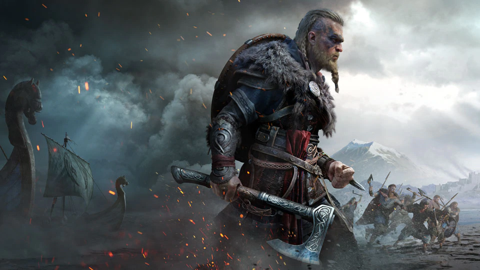
Assassin's Creed Valhalla
Assasin's Creed Vahalla é o capítulo mais recente da franquia da franquia da Ubisoft e o primeiro Assassin's Creed a ser lançado para Playstation 5 (PS5) e Xbox Series X/S. O game tem o mesmo sistema de RPG que começou em Origins e continuou em Odyssey,
com árvores de habilidade, equipamentos com atributos e escolhas de diálogos em conversas com outros personagens. Entre os pontos mais fortes de Valhalla estão o combate e a exploração, que pode render mais de 100 horas
de jogo para encontrar todos os segredos pelo mundo aberto.
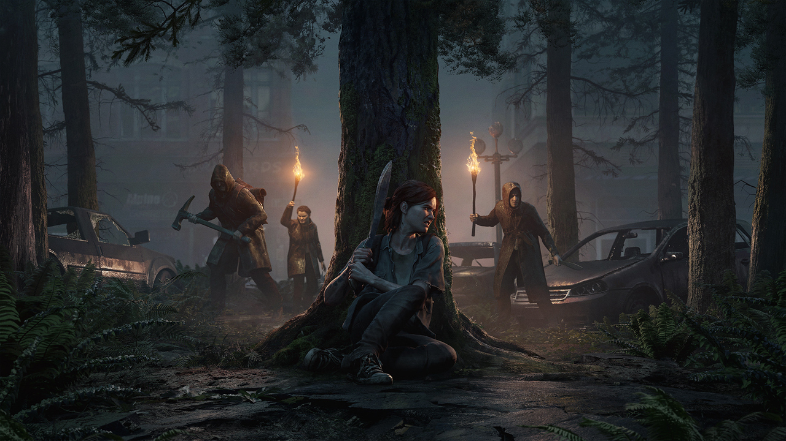
The Last of Us Parte 2
The Last of Us Parte 2 é o capítulo final da série que começou no PlayStation 3 (PS3) em 2013. Lançado em 2020 exclusivamente para PlayStation 4 (PS4), TLOU2 se tornou o game mais premiado da história com cerca de 259 títulos, incluindo o de Jogo do Ano
pelo The Game Awards. Com gráficos que impressionam e trilha sonora envolvente, o jogo deixa qualquer um sem fôlego, inclusive por conta do enredo forte e violento.
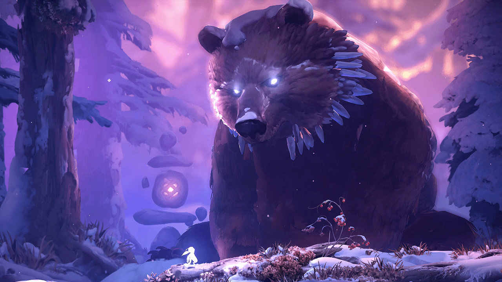
Ori and the Will of the Wisps
Ori and the Will of the Wisps foi um dos jogos de videogame mais aclamados pela crítica em 2020. O game da Moon Studios tem visual de tirar o fôlego, narrativa envolvente e oferece dificuldade na medida certa tanto para iniciantes quanto para veteranos
em games de plataforma. Por enquanto, o título só está disponível para Xbox One, Xbox Series X/S, Nintendo Switch e PC.
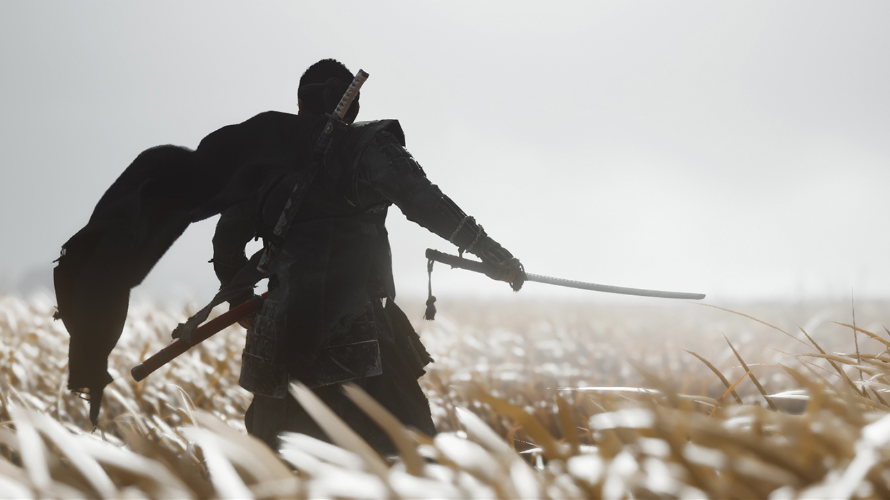
Ghost of Tsushima
Ghost of Tsushima foi um dos últimos jogos de videogame a chegar exclusivamente para PlayStation 4 (PS4) em 2020 e recebeu diversos elogios de jogadores e crítica especializada. Assim como em outros games de aventura em mundo aberto, o foco é a exploração,
mas o combate não deixa a desejar. Ao enfrentar inimigos o jogador pode escolher dois estilos: samurai, no qual desafia adversários para um duelo com honra, ou fantasma, em que a furtividade é a arma mais forte.
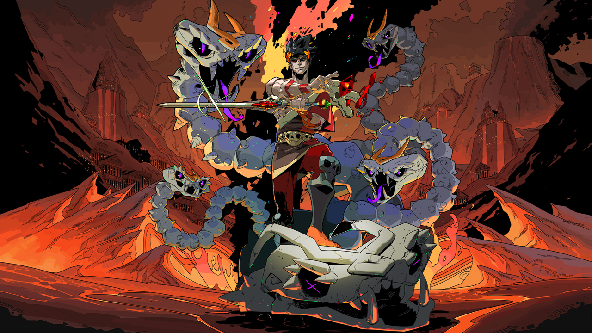
Hades
Hades é um jogo no estilo roguelike desenvolvido pela Supergiant Games, estúdio independente responsável por diversos jogos de videogame aclamados pelo público, como Pyre, Transistor e Bastion. Assim como em outros jogos de videogame que compartilham
a mesma gameplay, o jogador deve passar por masmorras geradas aleatoriamente enquanto enfrenta inimigos em combate de ação hack 'n slash. Sempre que você falha, pode tentar chegar ao final das fases novamente com novos
armas e poderes.
MMORPG
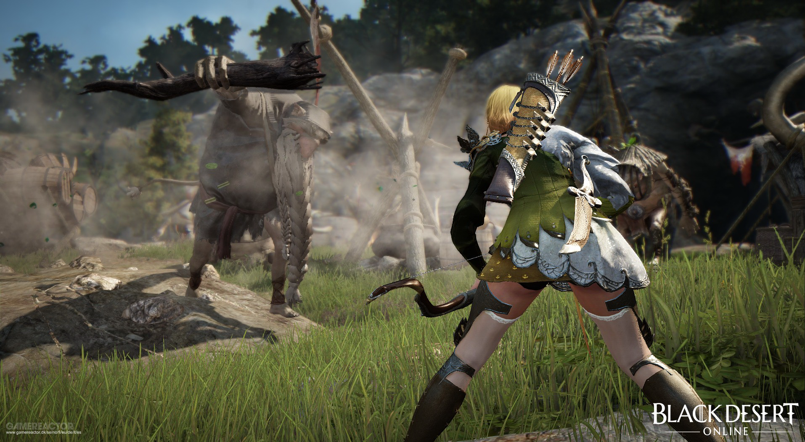
Black Desert Online
Aqui, vamos começar com uma ressalva: esse é um MMORPG considerado injustiçado! Pouco se fala sobre o título, e isso precisa mudar. O fato é que é um jogo com gráficos realmente incríveis e que ainda adota uma linha de combate até mesmo inovadora se levarmos
em conta seu gênero. O jogador deve priorizar suas habilidades de forma manual, algo semelhante a outros jogos de tiro.

Destiny 2
A melhor maneira de definir Destiny 2 é “aprimoramento”. Isso fica evidente ainda nos primeiros segundos de jogo, onde o aperfeiçoamento em relação ao primeiro título é enfatizado. Vale mencionar que não há qualquer risco de repetição e o jogador vivencia
uma proposta ainda mais imersiva pelo mundo. Além disso, os personagens secundários ganham maior destaque e possuem importância para compor o universo do game.
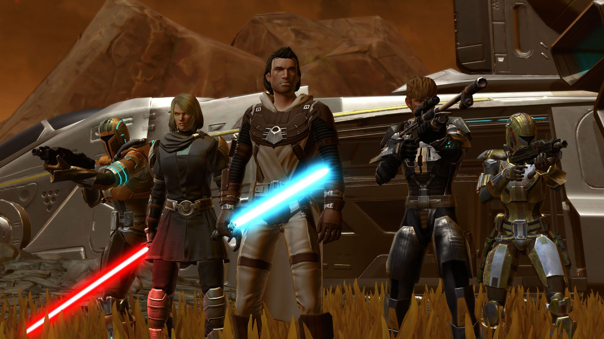
Star Wars: The Old Republic
Quando de trata de Star Wars, uma coisa é certa: fãs assíduos nunca faltam! E, com Star Wars: The Old Republic isso não poderia ser diferente. Aliás, “que a força esteja com você” na hora de desbravar um mundo aberto, ainda mais se você for um “jovem
padawan” – os recursos são quase inesgotáveis!
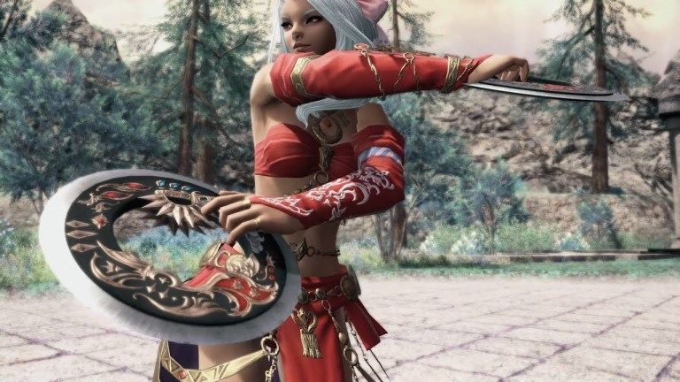
Final Fantasy XIV
Já Final Fantasy XIV é uma versão renovada do jogo original. “Realm Reborn”. Inclusive, não poderia ser um nome mais apropriado para esse jogo de MMORPG. Isso porque ele foi feito totalmente do zero, o que dá pra perceber assim que o jogador ingressa
em seu universo. Isso inclui desde o enredo até o sistema de jogo, personagens e funções.
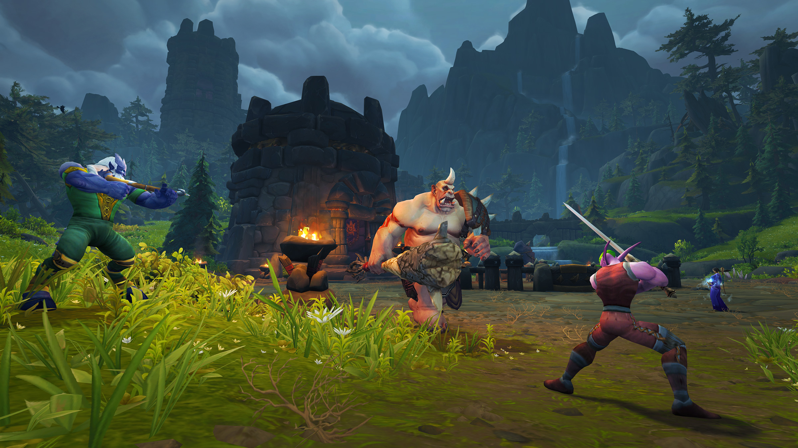
World of Warcraft
Para muitos, esse é o MMORPG mais importante e que contribui para a história de sucesso do segmento. World of Warcraft é composto por um universo bastante atrativo e com recursos que ajudam a tornar o título realmente envolvente. Embora tenha sido lançado
em 2004, ele constantemente recebe expansões, sem contar novos enredos, classes, áreas para exploração, habilidades e itens.
Estrategia
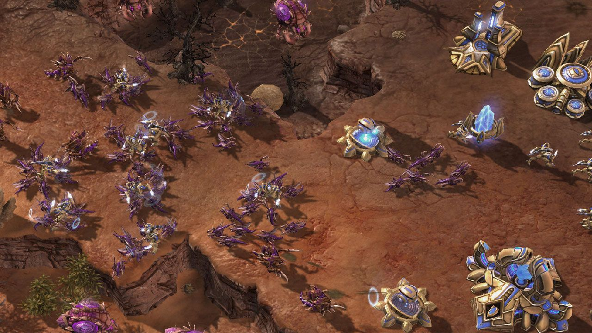
Starcraft II
A sequência do clássicos StarCraft de 1998 demorou mais de 10 anos para ser lançada, mas trouxe um pouco mais do game que tomou o gênero dos jogos RTS de assalto no final dos anos 90. No papel dos Terranos, Zergs ou Protoss, jogadores precisam construir
suas estruturas e evoluir suas tecnologias para criar os melhores exércitos e posicioná-los para a vitória. O game traz ainda seus populares modos multiplayer para testar suas habilidades em jogos de estratégia contra
outros jogadores online.
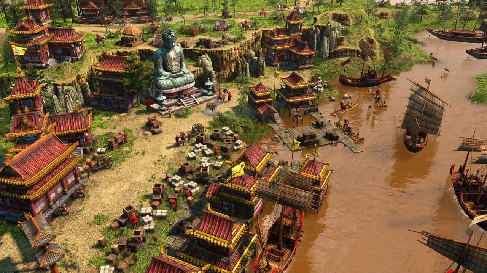
Age of Empires 3
Facilmente, a série de jogos de estratégia mais icônica, Age of Empires 3 leva os jogadores para colonizar as américas com uma de oito civilizações diferentes. Durante o game, será preciso recolher recursos ao seu redor, erguer exércitos para se proteger
e evoluir através das muitas eras conforme o mundo e suas prioridades mudam.
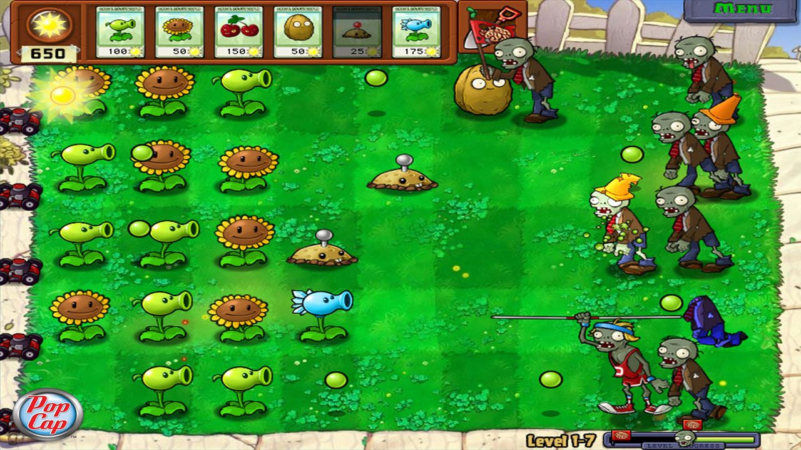
Plants vs. Zombies Original
O clássico Plants vs. Zombies foi uma grande revolução em dispositivos mobile ao trazer um jogo de estratégia profundo e divertido que funcionava muito bem me tela de toque. No game, o usuário precisa defender cinco linhas em um quintal que é atacado
por diversos tipos de mortos-vivos. Para enfrentá-los é preciso usar plantas que são capazes de atacar também de diversas maneiras. O jogador precisa achar as melhores combinações para enfrentar cada tipo de zumbi.
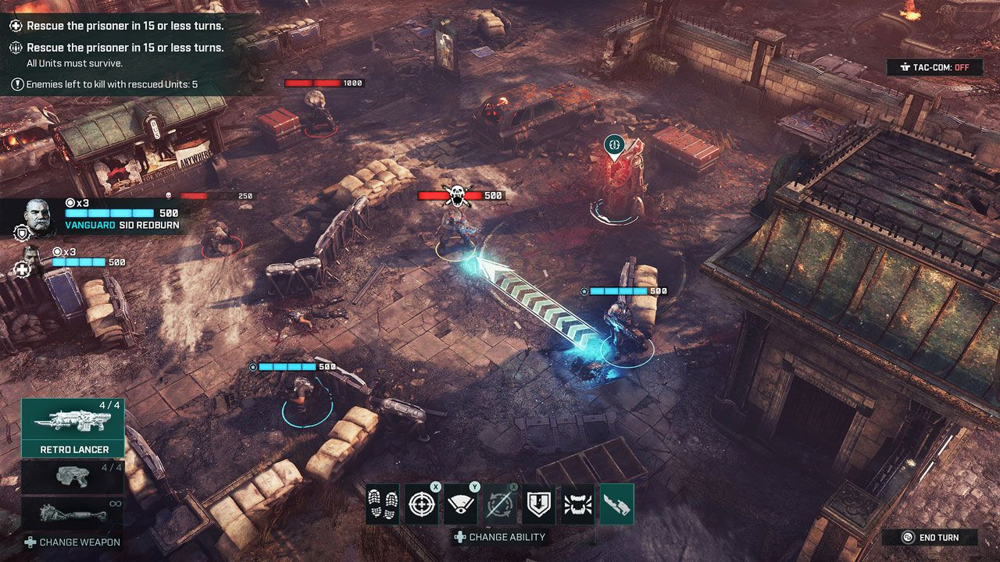
Gears Tactics
Semelhante a Halo Wars, a franquia Gears of War (hoje só Gears) também ganhou um spin-off nos moldes dos populares jogos de estratégia que se passa antes do primeiro game. Usuários terão que lutar contra a ameaça subterrânea dos Locusts em diversos campos
de batalha com movimento estratégico e capacidade de se proteger no cenário assim como no game de tiro.Um grande diferencial do jogo em relação a outros jogos de estratégia é seu nível de violência que continua alto.
Além de tirar toda a energia dos inimigos é possível executá-los com os tradicionais rifles equipados com motosserras da série.
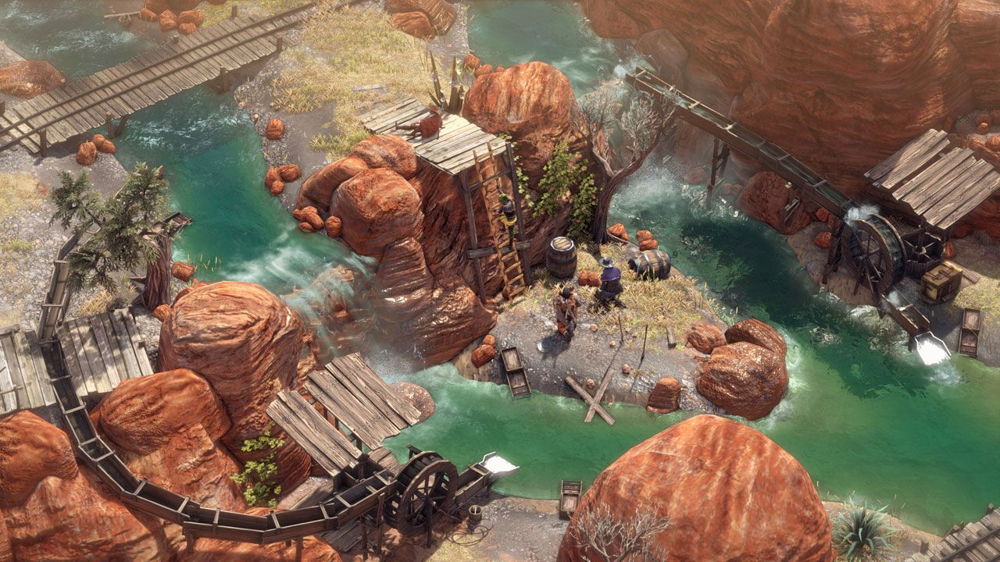
Desperados III
Muitas vezes descrita como Commandos no Velho-Oeste, a série de jogos de estratégia Desperados coloca os jogadores no papel de um grupo de especialistas em diversas áreas em situações adversas. Normalmente o usuário precisa conseguir uma forma de eliminar
seus oponentes de forma estratégica, sem alertar outros inimigos ao redor, com o uso das habilidades especiais de cada personagem.